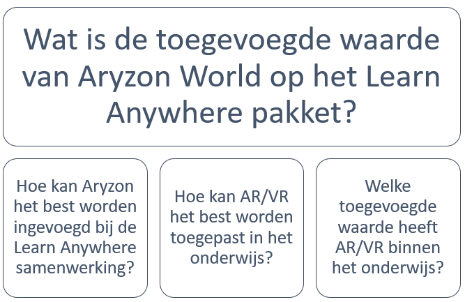
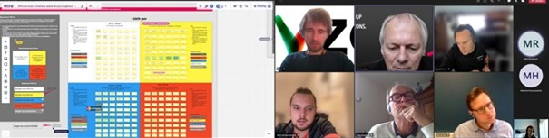
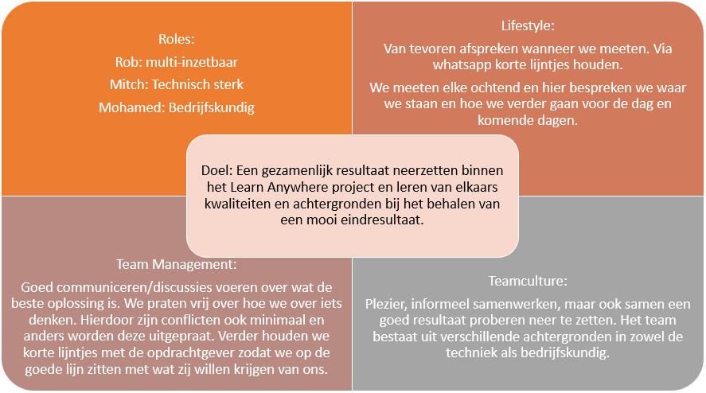

Minor Smart Industries portfolio van Rob ten Brinke
Nadat de pitches over de verschillende projecten gegeven waren, was de keuze aan de studenten gegeven om een nummer 1, 2, 3 en 4 te maken. Dit zodat hierdoor automatisch een soort indeling zou ontstaan. Ik heb een 1 gezet bij Aryzon/Logitech aangezien mij het onderwerp erg aansprak. Ik denk dat later veel gedaan kan worden met kennis over AR/VR en de technieken die hierbij komen kijken.
De groep bestaat uit de volgende leden:
Rob ten Brinke (ik)
Mohamed Hassan
Mitch Proosten.
De eerste versie van het projectplan is gemaakt. Hierbij is vooral de aandacht gelegd op twee delen. Eén deel bedrijfskundig en één deel ICT/technisch.
De bedrijfskundige kant gaat over het integreren van Aryzon bij de samenwerking van de verschillende groepen.
Het ICT/technische vraagstuk gaat over hoe AR/VR toegepast kan worden in het onderwijs en wat voor toegevoegde waarde dit heeft.
Hierbij hebben we één hoofdvraag met verschillende deelvragen gemaakt.Ik wil vooral zelf veel leren van beide kanten. Alhoewel de ICT/technische kant mij meer aanspreekt wil ik ook kennis maken met de bedrijfskundige kant.
Het lijkt er op dat Mitch zich met de vraag "Hoe kan AR/VR het best worden toegepast in het onderwijs?" bezig gaat houden, Mohamed met de vraag "Hoe kan Aryzon het best worden ingevoegd bij de Learn Anywhere samenwerking?" en ik met de vraag "Welke toegevoegde waarde heeft AR/VR binnen het onderwijs?".
Vanuit de HAN is een creative sessie gehouden om van andere kanten het project te bekijken. Ik ging er heen zonder enige verwachtingen. Ik keek wel wat op mij af kwam. Bij de sessie zelf bleken de begeleiders (vanuit de CS) nog niet veel van het project af te weten, dit is natuurlijk ook niet te verwachten. Echter vond ik dit het proces wel langzamer laten lopen, alhoewel niet altijd dezelfde uitleg gegeven wordt door de opdrachtgevers. Dus we krijgen altijd wat nieuwe informatie.
Ik denk dat zo'n creative sessie beter werkt als mensen al eerder een sessie gehad hebben. Met meer ervaring hiermee gaat het makkelijker om dit te doen. Dit ligt natuurlijk ook aan de persoon hoe goed je hier in bent. Hetgeen wat ik uit de creative sessie gehaald heb om misschien toe te passen in het project is:
Learn Anywhere/Aryzon in de vorm van een Lease contract aanbieden.
Alle kosten en opbrengsten per maand verantwoorden.

Het doel wat bij mij echt speelt is het leren van de andere achtergronden. Aangezien ik geen tot weinig ervaring heb met bedrijfskundige en ICT-technische vraagstukken. Hier kan ik dus erg veel van leren en steek ik ook enorm veel van op. Hier komt ook mijn motivatie vandaan om genoeg tijd in het project te steken en bezig te gaan, het constant blijven leren van anderen.